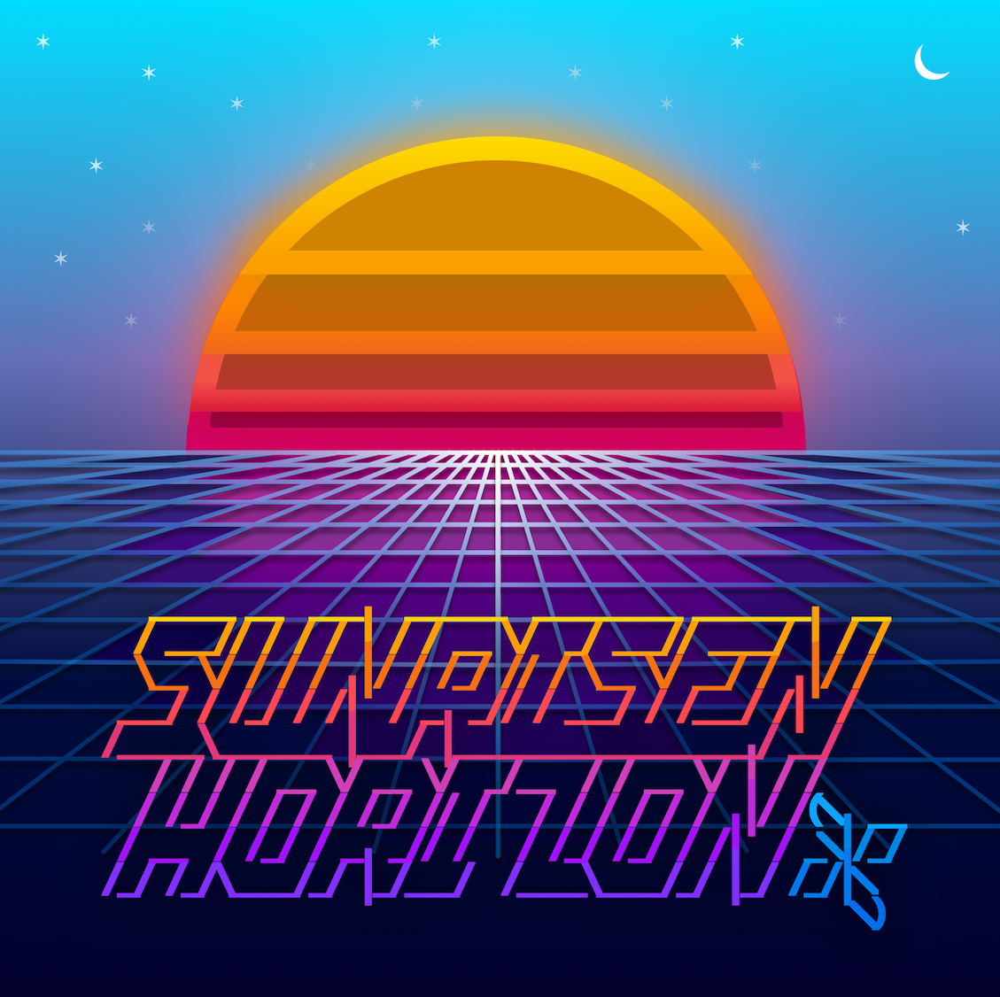

2026
> Became a mentor of 3 team members in Operational Excellence to improve high-tier VIP escalation workflow / overall time-to-resolution
About a decade ago, I began my programming journey in mastery-based learning as a graduate from Launch School culminating in the Capstone Program.
I have since built a real-time collaborative REPL, started a job in 2019 as a mid-level software engineer at DigitalOcean, advancing to Senior Engineer in the Object Storage Team. Now, I am looking for my next opportunity!
I am also part of the Uzu/Tidal live coding music community, which I improve existing tools to encourage learning + usability in warm.strudel.cc, a music-patterning code editor.
While Ying Chyi is my first name, Gooi is my given last name and what I go by. It is pronounced as "gooey".
Click to listen — [view source]
> Became a mentor of 3 team members in Operational Excellence to improve high-tier VIP escalation workflow / overall time-to-resolution
> Advanced to Senior Engineer I (IC3)
> Improved log analytics and dashboards to speed up troubleshooting of customer escalations, contributing to improved resolution times which leads to lowered churn
> Led deployment of 3 additional Spaces regions (in Bangalore, London and Toronto datacenters)
> Mentored IC2s to aid in deployment efforts, designed load tests, gathering useful performance data for new offerings such as the Spaces high-performance tier at >10K combined RPS per bucket
> Advanced to Software Engineer II (IC2)
> Proposed RFC and implemented secure encryption/decryption/storage of S3 secret access keys in DB
> Joined DigitalOcean as IC1
Curious about how chord progressions work? Wonder why some chords go better/worse with antoher? How about using chords to express emotions in a story?
I introduced the basic chords in a major scale. Aside from learning various ways of arranging chords, I also introduced voicing, inversions, scales and transposition.
Link to workshop: Watch on YouTube
Ever been curious about what goes into synthesizing sounds? Want to make your own supersaw? Or maybe you want to recreate synth leads you heard elsewhere?
I introduced foundational sound design concepts, then showed each step in designing your own "supersaw" or super-shapes.
Link to workshop: Watch on YouTube
Add customlabels setting to allow user to remap edo / numbered labels to custom string value of their choice
Example Usage
.pitchwheel({
labels: 'numbers',
edolabels: 3/4,
customlabels: ['I', 'I#', 'II', 'II#', 'III', 'VI', 'VI#', 'V', 'V#', 'VI', 'VI#', 'VII'],
})
Add mode 'flakygon' which allows both flake and polygon modes to render at the same time
Add note labels in addition to edo labels
Fix dots not showing when edolabels are disabled
Allow for adjusting dotsize, dotalpha and active dotsize multiplier
Allow clearrect bool option to disable clearing rectangle area behind labels Update as of 2/19/2026 Add sharp/flat notes to the note to freq lookup table / map Add ability to detect root note automatically if scale() or withBase() or edoScale() exists in the pattern circle should not be rendered by default Update as of 2/15/2026 I've made even more improvements and made it compatible with the new edo scale changes merged recently. Allow for alpha adjustment for BOTH regular edo index labels AND degree index labels from custom edo scales Label text alignment fixes and refactoring, mostly extracting logic out from ctx.fillText()/ctx.clearRect() Place the edo name 16 edo or 31 edo at the center of the pitchwheel Renamed some options for better user-experience Replaced the half flat symbol with a more narrow left pointing triangle Major Changes Allow for circle to control circumference thickness, separate from line thickness Add lineJoin (alias linejoin) option to round line corners Add alias padding for margin Add alias dotsize for hapRadius Edit jsdoc to include proper description More options added for labelling, such as note label display or note index display More options added to adjust text sizes, label distance, circle/line thickness multiplier

Link to album: https://music.waveflower.org